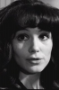

Also known as:Le Viol du vampire (original title)
Country:France, 95 minutes
Spoken languages:French
Genres:Horror
Director(s):Jean Rollin
Writer(s):Jean Rollin, Alain Yves Beaujour
Video Codec:Unknown
Number: 2644


Certification:
Storyline:
After a psychoanalyst unsuccessfully tries to convince four sisters that they are not 200 year old vampires, the Queen of the Vampires promulgates the cause of the Undead.
Cast: 

Medium: Ultra HD Bluray,
Loaned: No
Aspect ratio: Unknown